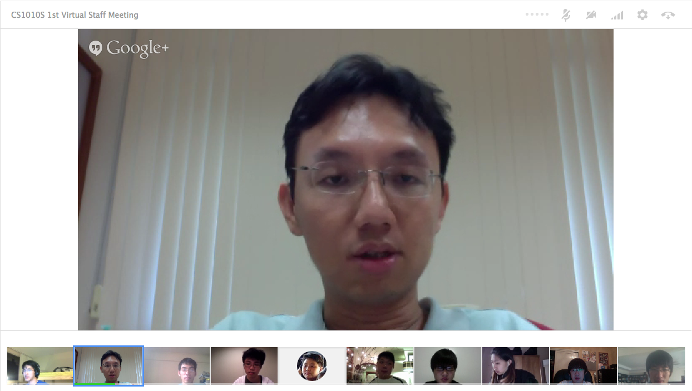

The CS1010S Team
Prof Ben Leong · Alex Liew · Ong Chee Chin · Soon Chun Mun · Eldric Liew · Jason Yeo · Peh Shao Hong · Soedarsono Lim · Raymond Tang Xiao · Elaine Sun · Tay Yang Shun · Ng Yee Sian

Prof Ben Leong · Alex Liew · Ong Chee Chin · Soon Chun Mun · Eldric Liew · Jason Yeo · Peh Shao Hong · Soedarsono Lim · Raymond Tang Xiao · Elaine Sun · Tay Yang Shun · Ng Yee Sian